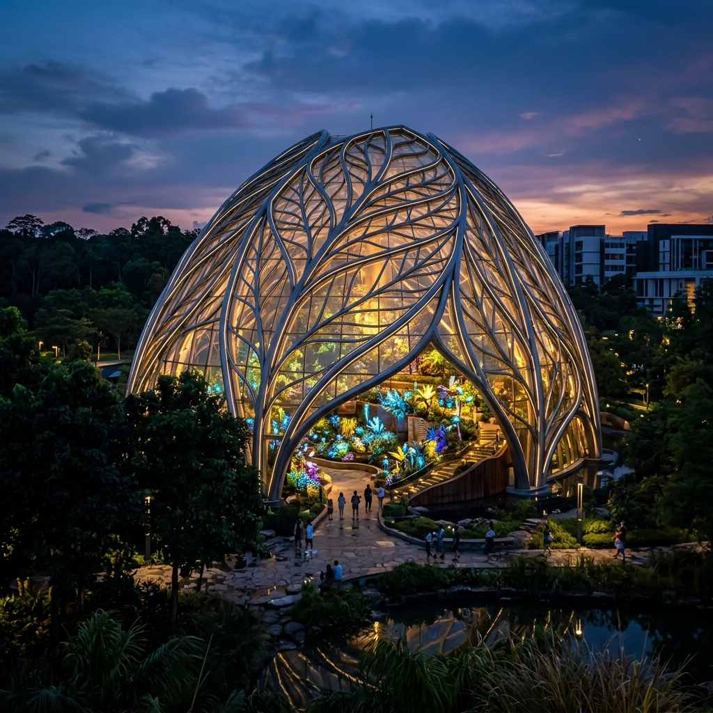
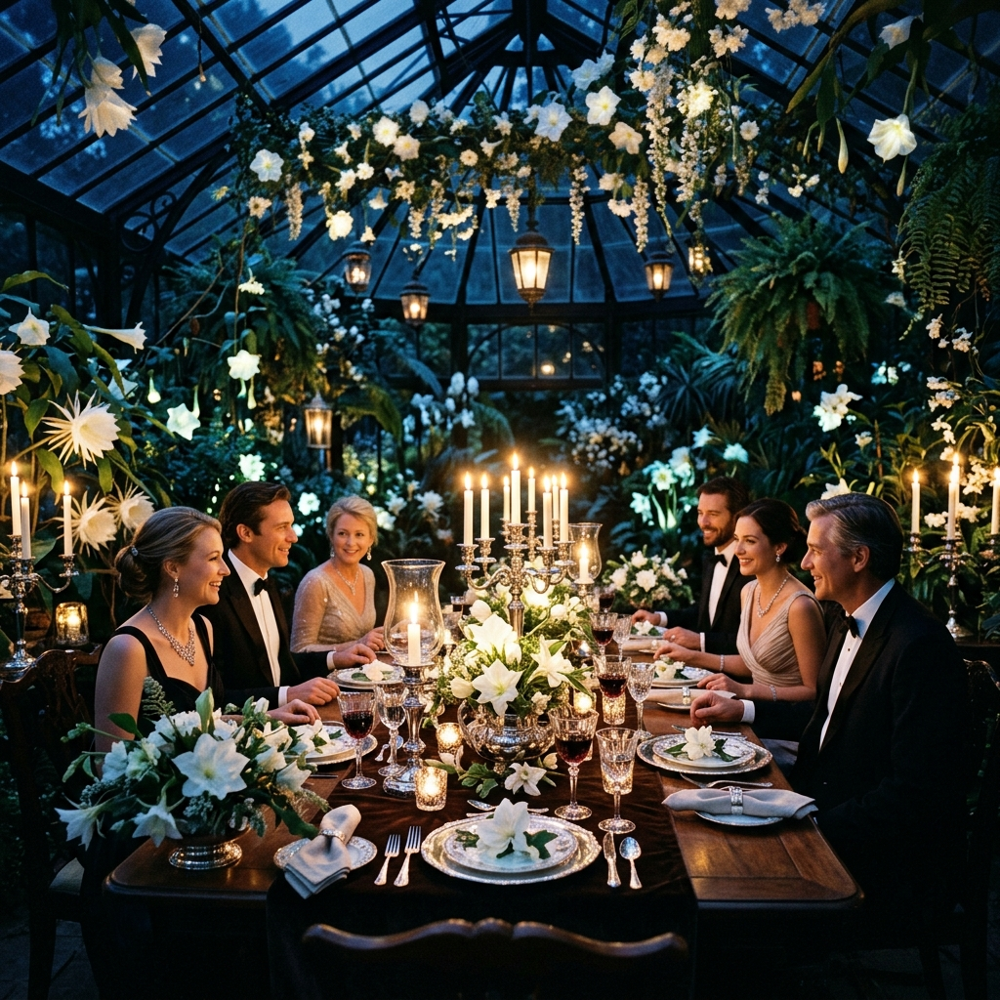

Elysian Perspectives
& Designs
A non-linear journey through the world's most innovative botanical architecture and biological conservation projects.


The Silver Fir Grove
Experience the tallest specimen in the northern hemisphere, preserved for over a century.
The Arboretum Project
Home to over 4,000 unique tree species, the Arboretum is the heart of our conservation efforts. Each tree is a living library of climate history, holding the secrets of the past and the keys to our future breathable world.
Global Origin Zones
Native Species
Inter-Climate Labs
Yearly Discoveries

Genomic Symmetry
Our state-of-the-art laboratory at the heart of Elysian Gardens doesn't just study seeds; we study the very code of survival. By mapping the complex DNA of climate-resilient flora, our research teams are building a biological blueprint for the forests of tomorrow. This digital preservation initiative ensures that even the rarest species are protected against environmental shifts, providing a global heritage bank that will serve generations to come. From synthetic pollination techniques to cryo-preservation, we are securing the future of our planet's biodiversity one genome at a time.
Botanical & Genomic Symmetry
The Fern Theory
Mapping the mathematical perfection of Jurassic ferns through high-resolution genomic scanning. Each frond follows a recursive sequence that we are now translating into architectural blueprints for our future biomes.
Geometric Blooms
The golden ratio within the petals of a Desert Rose provides a biological map for heat resistance. Our research into these geometric survivors allows us to develop climate-adaptive flora for arid global regions.
A Century of Preservation
1924 - The Founding
Initial gift of the Highland Valley estate.
1972 - UNESCO Recognition
Formal heritage status granted for rare ferns.
2020 - The DNA Initiative
mapping our first endangered species genome.

The Digital Archive & Library
Rare Manuscripts
Digital scans of 17th-century texts.
Seed Database
DNA profiles for 12,000 species.
Audio Canopy
Soundscapes from the Amazon Wing.

Join the Inner Sanctuary
Elysian Gardens is more than a destination; it’s a shared commitment to the beauty of the biological soul. As a Grand Patron, you are granted exclusive morning access to the Moon-Flower Greenhouse, where rare night-blooming species wait for the first dawn. Enjoy seasonal invitations to our "Botanist's Table" dinner series—an intimate culinary experience where every ingredient is harvested directly from our healing wings under the guidance of our head curators.
Explore Full Benefits12
Annual Press Features
150+
Peer Reviewed Papers
30k
Student Interns
1.2m
Reforested Acres


The Virtual Canopy Walk
Experience the forest from 40 feet above the ground. Our new virtual canopy walk uses state-of-the-art biological sensors to translate the tree's internal communication into soundscapes and visual pulses. Understand the 'Wood Wide Web' like never before through this immersive aerial journey.
40ft
Observation Height
The Bio-Scent Gallery
Midnight Jasmine
A heavy, intoxicating musk that only manifests when the moon reaches its zenith. Used in ancient ritual therapies.
Silver Fir Mist
The refreshing ozone of the northern heights, synthesized for cognitive clarity and stress reduction.
Nectar Glow
A high-energy pheromone profile designed to attract the rare iridescent moths of the southern plateau.
2026 Bloom Forecast
"Our goal is to make nature the ultimate classroom and the ultimate legacy."
- Dr. Julian Vance, Chief Curator